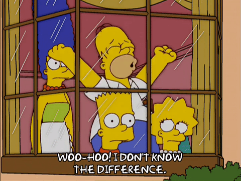
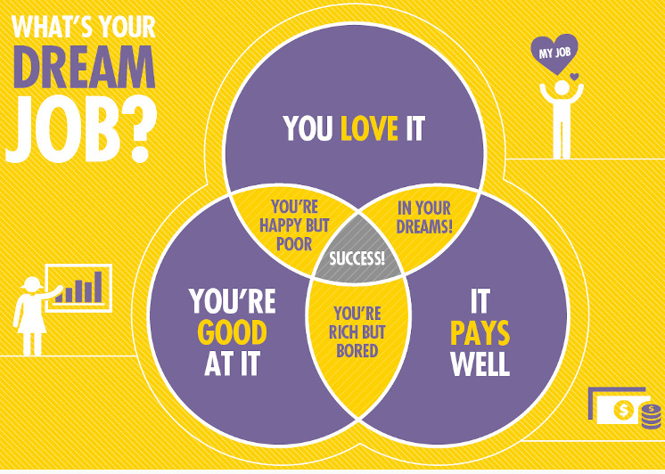
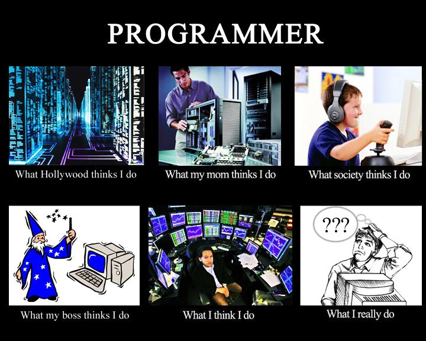
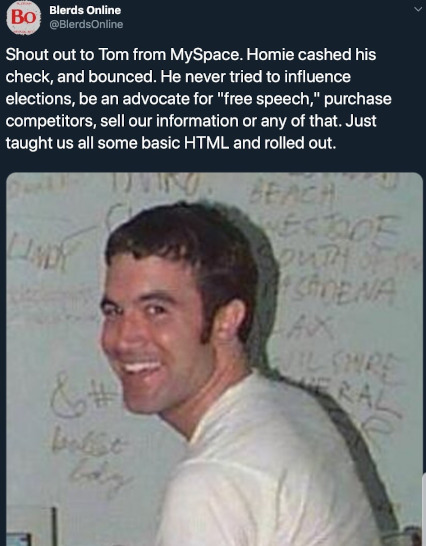

On Being a
Software Engineer
"Who Are You?"
- Matthew, Matt, Mr. Turland
- Born and raised in Acadiana
- New Orleans resident since 2014
- Married father of four
- Software Engineer at Waitr
Takin' Notes
Slides are here:
https://matthewturland.com/presentations/"Software?"
Software Defined
"Computer software, or simply software, is a collection of data or computer instructions that tell the computer how to work. This is in contrast to physical hardware, from which the system is built and actually performs the work.Software - Wikipedia
Examples?
Here Are a Few
"Software Engineer?"
"A software engineer is a person who applies the principles of software engineering to the design, development, maintenance, testing, and evaluation of computer software."Software engineer - Wikipedia
Same Difference
More or less *
Mostly Involves Doing This

See the Resemblance?
Why I Chose My Career Path
Empowerment
My Family
Quick Job Facts
| 2018 Median Pay | $105,590/year ($50.77/hour) |
|---|---|
| Typical Entry-Level Education | Bachelor's degree |
| Number of Jobs, 2018 | 1,365,500 |
| Job Outlook, 2018-28 | 21% (Much faster than average) |
| Employment Change, 2018-28 | 284,100 |
How I Chose My Career Path
Really, though...
Parents with Tech Careers
 IT Support,
IT Support,Network Administration
Medical Transcription
"Recreational Research"
MySpace Generation
High School
- Computer science classes
- Louisiana Computer Programming Classic
- Web team
- Newspaper
At Ben Franklin
- Computer science club - Mr. Eady: deady@bfhsla.org
- Newspaper - Ms. Peyton: epeyton@bfhsla.org
- Riverbend Review - riverbend@bfhsla.org
College
- Entry-level jobs
- Association for Computing Machinery
- Graduated ULL in 2006 with BSc. Computer Science
- Concentration: Video Game Design & Development
"Why Not Make Games?"
- Long hours
- High stress
- Low job security
- Low pay
- Toxic consumer culture
- Crunch / burnout culture
Plus, I already had experience in another industry
"What Skills Do I Need?"
"The most common answer from a graduate student is: it depends."My college philosophy professor
Specialties
Frontend Skills
- HyperText Markup Language (HTML)
- Cascading StyleSheets (CSS)
- JavaScript (JS)
- One framework
- React
- Vue
- Angular
Backend Skills
- One backend language - see TIOBE Index
- JavaScript / Node.js
- PHP
- Python
- Java
- C#
- Go
- One web application framework
- One package management system
- SQL and one database server
- MySQL / MariaDB
- PostgreSQL
- Oracle
- Microsoft SQL Server
Data Science
- Statistics
- SQL
- Python and relevant libraries
- NumPy for scientific computing
- Pandas for data manipulation
- Scikit-learn for machine learning
- One deep learning framework
- TensorFlow
- PyTorch
- Keras
General Skills
- Version control software (e.g. Git)
- Ticket systems (e.g. Jira)
- Collaborative content software (e.g. Confluence)
- Real-time communication software (e.g. Slack)
- Agile software development practices
"Soft" Skills
- Patience
- Research
- Estimation
- Communication
- Collaboration
- Planning
- Technical Writing
- Debugging
- Mentoring
- Public Speaking
A Typical Day...
- Coding changes or new features
- Adding or modifying automated tests
- Peer reviewing code changes from other engineers
- Communicating with Product about requirements, estimates, and progress
- Collaborating with QA to manually test changes
- Coordinating with Operations to plan deployments
- Assisting Support or other engineers with debugging or troubleshooting technical issues
... Looks Like This